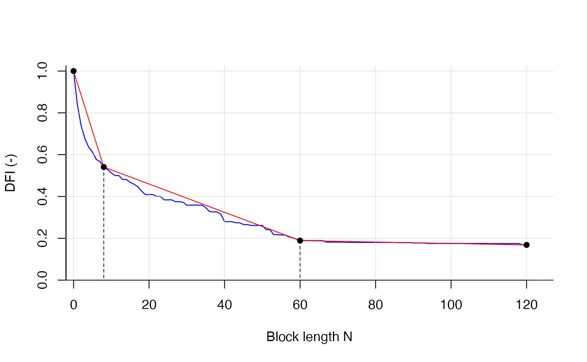

Example of DFI values. This is dummy data. A vector with 121 DFI-values between 1 and 0.
The index is decreasing monotonously with larger n.
This can be used for testing the find_bps function.
dfi_example
vector data
#> [1] 1.0000000 0.8405422 0.7387244 0.6770378 0.6361289 0.6126313 0.5776205 #> [8] 0.5671273 0.5409439 0.5288180 0.5129054 0.5003176 0.5003176 0.4811656 #> [15] 0.4811656 0.4677625 0.4590217 0.4469832 0.4259402 0.4094476 0.4094476 #> [22] 0.4094476 0.4006761 0.4006761 0.3839521 0.3839521 0.3839521 0.3752259 #> [29] 0.3752259 0.3724468 0.3587832 0.3587832 0.3587832 0.3587832 0.3587832 #> [36] 0.3471278 0.3282138 0.3262966 0.3262966 0.3156789 0.2797003 0.2797003 #> [43] 0.2797003 0.2743747 0.2743747 0.2658673 0.2658673 0.2616970 0.2616970 #> [50] 0.2616970 0.2616970 0.2418954 0.2418954 0.2175767 0.2175767 0.2157800 #> [57] 0.2157800 0.2069918 0.2031831 0.1968977 0.1891137 0.1891137 0.1891137 #> [64] 0.1891137 0.1888859 0.1888859 0.1888859 0.1815802 0.1815802 0.1815802 #> [71] 0.1815802 0.1815802 0.1815802 0.1805189 0.1805189 0.1805189 0.1801984 #> [78] 0.1801984 0.1801984 0.1801984 0.1801984 0.1801984 0.1801984 0.1801984 #> [85] 0.1801984 0.1801984 0.1794432 0.1794432 0.1794432 0.1794432 0.1775426 #> [92] 0.1775426 0.1775426 0.1775426 0.1754300 0.1754300 0.1754300 0.1754300 #> [99] 0.1754300 0.1754300 0.1754300 0.1754300 0.1753587 0.1753587 0.1753587 #> [106] 0.1753587 0.1753587 0.1753587 0.1753587 0.1753587 0.1746737 0.1746737 #> [113] 0.1746737 0.1746737 0.1746737 0.1746737 0.1746737 0.1746737 0.1746737 #> [120] 0.1683539 0.1683539#> Calculating breakpoints . . . #> 0% 19 % 39 % 60 % 80 % 100 % #> Breakpoints ready . . .#> $bps_position #> [1] 19 #> #> $bias #> [1] 0.08097506 #> #> $rel_contr #> contr_1 contr_2 #> 0.5905524 0.4094476 #>